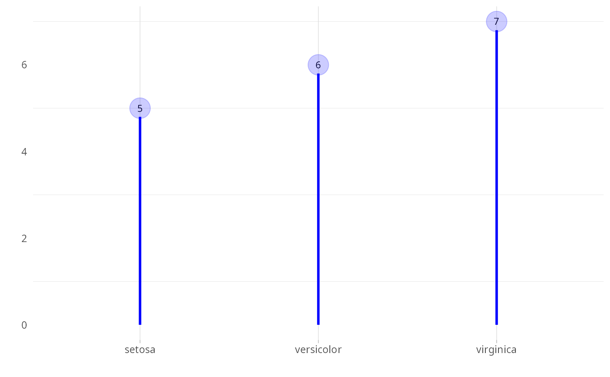

This function creates a lollipop chart using ggplot2.
Usage
plot_lollipop(
data,
label_x = "",
label_y = "",
colors = NULL,
color_text = "black",
size_text = 3,
size_ball = 8,
alpha_ball = 0.2,
min_value = 0,
max_value_gap = 1
)Examples
#summarizing iris dataset
data <- iris |> dplyr::group_by(Species) |>
dplyr::summarize(Sepal.Length=mean(Sepal.Length))
head(data)
#> # A tibble: 3 × 2
#> Species Sepal.Length
#> <fct> <dbl>
#> 1 setosa 5.01
#> 2 versicolor 5.94
#> 3 virginica 6.59
#ploting data
grf <- plot_lollipop(data, colors="blue", max_value_gap=0.2)
plot(grf)
